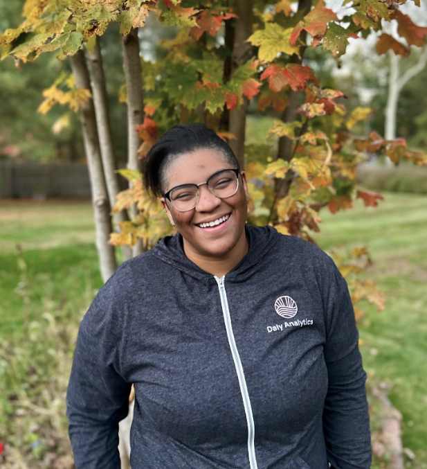
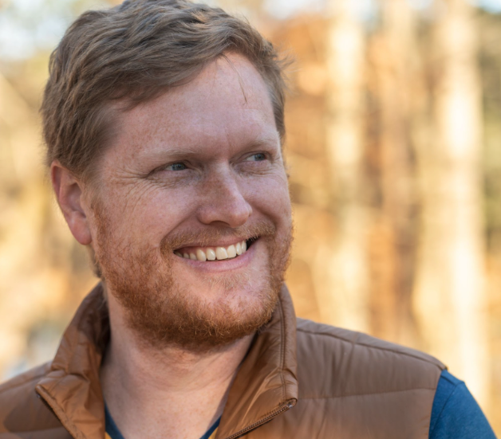

R+AI 2025 Abstracts
Joe Cheng
CTO, Posit
Keynote: Keeping LLMs in Their Lane: Focused AI for Data Science and Research
Date & Time: November 12 at 10:00am, Eastern
Abstract
LLMs are powerful, flexible, easy-to-use… and often wrong. This is a dangerous combination, especially for data analysis and scientific research, where correctness and reproducibility are core requirements. Fortunately, it turns out that by carefully applying LLMs to narrower use cases, we can turn them into surprisingly reliable assistants that accelerate and enhance, rather than undermine, scientific work. This is not just theory—I’ll showcase working examples of seamlessly integrating LLMs into analytic workflows, helping data scientists build interactive, intelligent applications without needing to be web developers. You’ll see firsthand how keeping LLMs focused lets us leverage their “intelligence” in a way that’s practical, rigorous, and reproducible.
Bio
Joe Cheng is the CTO and first employee at Posit, PBC (formerly known as RStudio), where he helped create the RStudio IDE, Shiny web framework, and Databot agent for exploratory data analysis.
Jasmine Daly
Principal Consultant & Founder, Daly Analytics

Me, Myself & Claude
Date & Time: November 12 at 10:45 AM, Eastern
Abstract
My AI journey started simple - better email replies and vacation planning. Then came the existential dread: “This thing writes decent R code and Shiny apps - am I about to be obsolete?” Followed quickly by the dependency anxiety: “Am I becoming lazy and losing my hard-earned R expertise to this crutch?”
Turns out I was asking the wrong questions. The real question is: how do you use AI as a force multiplier that makes you a better R developer, not a dependent one?
Running a one-person analytics shop with real-life constraints, I’ve had to get creative about scaling my skills rather than my hours. AI assistance has let me take on more sophisticated R projects - complex Shiny applications, advanced package development, and solutions that previously would have meant turning down interesting work or working unsustainable hours. The breakthrough insight: AI doesn’t do the work for me - it frees up cognitive bandwidth so I can think more strategically, explore topics I never had time to study properly, and develop stronger opinions about what actually constitutes a good solution.
This talk walks through real examples from my practice where AI assistance helped me become more ruthlessly solutions-focused while actually strengthening my R intuition. You’ll see how spotting AI hallucinations and fixing error-prone generated code teaches you more about R patterns than traditional development ever did. We’ll also explore when AI tools do too much - over-abstracting solutions or creating unnecessary complexity - and how learning to recognize and redirect these moments actually sharpens your architectural decision-making.
Bio
Jasmine Daly is the Principal Consultant & Founder of Daly Analytics. She specializes in helping nonprofits and purpose-driven teams make sense of their data so they can tell better stories, support stronger programs, and drive real change. Her passion lies in bridging the gap between complex data and right-sized solutions, and she loves sharing her knowledge with others—especially when it involves exploring new tools and approaches at the intersection of R, Data Science and AI.
https://www.dalyanalytics.com/
https://www.linkedin.com/in/jasminemdaly
Jonathan Pearce
Data Scientist, Lightspeed Commerce
Reviving Forgotten Code with LLMs
Date & Time: November 12 at 11:20 AM, Eastern
Abstract
Open source R projects are the backbone of our community, but too often, valuable code is left behind. Repositories go stale, contributors move on, and documentation or testing never quite catches up. Meanwhile, tools such as roxygen2 and testthat as well as many others have become essential for the maintainability and distribution of R projects.
In this talk, we will see how large language models (LLMs) can accelerate the revival of under-maintained or legacy open source R projects. Using real examples, we will demonstrate how LLMs can: reverse-engineer undocumented functions into clear roxygen2 documentation blocks, scaffold testthat unit tests to validate behavior, integrate lintr and styler to enforce consistent code style and formatting, and suggest general code cleanups to improve readability and modularity.
We will walk through a practical, R-centric workflow that combines LLMs with modern package development tools to bring old code back to life. Whether you’re inheriting an archived package or want to breathe life into your own forgotten side project, this session will equip you with the tools and strategies to reduce technical debt and modernize open source code without starting from scratch.
Bio
Jonathan is a Data Scientist at Lightspeed Commerce in Toronto, Canada. He previously worked as a data scientist at an economic consulting company. With four years of experience as an industry data scientist, he is interested in the intersection of AI tools and open-source development. He is particularly interested in how AI can make open-source projects more accessible for both users and contributors by helping to support development, bug fixing, documentation, and deployment, ultimately bringing more open-source initiatives to life and helping them reach a larger user base. Jonathan holds an undergraduate degree in Mathematics and a Masters degree in Computer Science from McGill University.
Garrick Aden-Buie
Software Engineer, Posit

Tools for LLMs and Humans who use R
Date & Time: November 12 at 11:55 AM, Eastern
Abstract
The btw package bridges the gap between R environments and large language models (LLMs), providing a collection of tools that supercharge LLMs for R tasks.
At the core of btw are tools to describe data frames, functions, package documentation, help pages, file paths, and environment objects, automatically generating structured descriptions that provide essential context to LLMs. btw goes beyond context-tools to include additional tools that are useful when building chat interfaces or LLM-powered agents in R with ellmer.
This presentation will demonstrate practical workflows for R users seeking to leverage AI assistance more effectively, showcasing how btw eliminates the friction of providing computational context to LLMs and enables more productive human-AI collaboration in data science and statistical computing workflows.
Bio
Garrick Aden-Buie is a Software Engineer for Shiny at Posit. He builds broadly accessible tools that help everyone do data science in R and Python with Shiny, Quarto and R Markdown. Before Shiny, he helped build Posit Academy, an online, immersive, data science apprenticeship for professional teams. Garrick is a passionate and long-time R user and educator and has enjoyed sharing his work online at https://garrickadenbuie.com and via numerous open source projects including regexplain, xaringanExtra, and epoxy.
Pawel Rucki
Principal Data Scientist, Roche
Building a Better R AI Assistant: A Multi-Agent Approach
Date & Time: November 12 at 12:30 PM, Eastern
Abstract
Public large language models (LLMs) offer a glimpse of AI-powered assistance for R, but their utility is often limited to the most popular packages, constrained by knowledge cutoff date, and does not cover private, internal packages. How do we provide expert-level support for the entire R ecosystem, including specialized libraries and brand-new releases? This talk introduces our solution: a scalable, multi-agent system where expert agents are dynamically created on-demand for each of R’s 22,000+ packages. By building these agents from the most current documentation, we deliver specialized, trustworthy support where public models fail.
This session dives into the architectural patterns that make our multi-agent system work. Built in Python using the LangGraph framework, I’ll focus on the key design decisions, sharing the practical techniques used to give agents the right context to write, debug, and explain R code. I will also cover our approach to dynamically creating and managing these specialized agents. The entire system is deployed as a flexible backend service, allowing us to support multiple types of clients including an interactive chat, an MCP server, and a REST API.
Whether you’re building developer copilots or specialized technical assistants, this talk offers a framework for creating AI systems that are not just functional, but also robust, maintainable, and trustworthy at scale.
Bio
Pawel is a Principal Data Scientist at Roche, where he serves as Chief Engineer for one of the largest R codebases in Product Development. With nearly a decade of experience, he is an expert in applying R to solve complex challenges across diverse domains, including clinical trial data analysis, credit risk assessment, and geospatial modeling. His current focus is on the application of AI for code generation. Pawel holds a degree in Econometrics and Quantitative Economics from the University of Warsaw.
https://www.linkedin.com/in/pawel-rucki/
Mohamed El Fodil Ihaddaden
Analytics Engineer, HDI Global SE
mini007 - A Lightweight Framework for Multi-Agent Orchestration in R
Date & Time: November 12 at 1:05 PM, Eastern
Abstract
The growing sophistication of large language models has sparked interest in agent-based architectures capable of handling complex, multi-step reasoning processes. While R has robust support for working with LLMs via packages like ellmer, it lacks a lightweight, composable framework for coordinating multiple specialized agents. This is where mini007 comes in.
mini007 provides a high-level interface for defining and orchestrating cooperative agents that can decompose and execute multi-faceted tasks. It builds on ellmer to manage language model objects but introduces two key abstractions: Agent and LeadAgent. Each agent operates with its own identity, instruction set, and memory, allowing it to specialize in a specific task. The LeadAgent takes a broader prompt, splits it into logical subtasks, assigns these to the appropriate agents, and then integrates their responses into a coherent output.
The result is a modular and extensible agent system that enables process-level intelligence, chaining together tasks like information retrieval, summarization, and translation. All of this is done in R, using familiar patterns and without requiring extensive infrastructure or external orchestration layers.
This presentation will walk through the design philosophy, core architecture, and real-world applications of mini007, including a live demonstration of multi-agent interaction with OpenAI-backed models. Attendees will leave with a clear understanding of how to build and deploy their own agent workflows in R, as well as insight into how agentic thinking can enrich their LLM-based data science projects.
Bio
Mohamed el Fodil Ihaddaden is an analytics engineer at HDI Global SE. Based in Hamburg, Germany and originally from Algiers, Algeria, he specializes in data engineering and analytics solutions. He has also a significant experience in building and maintaining open source R packages.
Max Kuhn
Software Engineer, Posit PBC
Analyzing LLM Evaluations
Date & Time: November 12 at 1:40 PM, Eastern
Abstract
Frameworks exist for automating the evaluations of LLMs so that queries can be executed and assessed over many experimental factors: LLM models, prompts, replicates, etc. The resulting designs are often factorial in nature but can have a variety of hierarchical structures, such as replicates within queries, scores within raters, and so on.
This talk describes how experimental results can be analyzed and reported for a variety of designs and outcome types (percentage correct, correct/incorrect, ordinal scales, etc.). It also shows how off-the-shelf tools for Frequentist and Bayesian inferential analysis can be utilized. The methods are illustrated with an example evaluation experiment.
Bio
Max Kuhn is a software engineer at Posit PBC (nee RStudio). He is improving R’s modeling capabilities and maintaining about 30 packages, including caret. He was a Senior Director of Nonclinical Statistics at Pfizer Global R&D in Connecticut. He has applied models in the pharmaceutical and diagnostic industries for over 18 years. Max has a Ph.D. in Biostatistics. He and Kjell Johnson wrote the book Applied Predictive Modeling, which won the Ziegel award from the American Statistical Association, recognizing the best book reviewed in Technometrics in 2015. He has co-written several other books: Feature Engineering and Selection, Tidy Models with R, and Applied Machine Learning for Tabular Data (in process).
Thomas Charlon
Research Associate, Harvard Medical School
Biomedical ontology dictionary creation with embeddings and local LLMs
Date & Time: November 12 at 2:15 PM, Eastern
Abstract
Analysis of natural language concepts in the biomedical field remains a challenge, such as the analysis of clinicians’ narrative notes in electronic health records. While several hierarchies have been developed for codified data as medications and diagnoses (ICD, PheCode, RXNORM ingredients) which enable to regroup concepts into larger statistically significant groups, for natural language concepts however the task remains difficult. The Unified Medical Language System provides parent-child relationships between concepts, but it is challenging to identify at which level to regroup concepts and it is not a straightforward hierarchy. After multiple experiments trying to leverage graph theory properties, I finally took the route of a hybrid pipeline guided by the hierarchy of the codified data and leveraging BGE embeddings and the local LLM Llama 7B. In this workshop I will showcase the challenges in natural language ontology creation, how to constrain and control LLM behavior to manage securely the inherent hallucinations and safety-related issues, and why the LLM approaches enable new possibilities unreachable with previous methodologies.
Bio
As a Research Associate with Prof. Tianxi Cai, Thomas Charlon builds suicide risk models using survival analysis and NLP of electronic health records and scientific publications, to assist psychiatrists in identifying at-risk patients for the Center for Suicide Research Prevention project. He also develops a rheumatology patient history dashboard (R/Shiny), gastroentorology LLM agents (endoscopy scores), standardized mapping codebooks used by many other labs (MGB, CHA, Duke, Pittsburgh), statistical web apps to support and facilitate dissemination of results, and reproducible analysis processes.
Prior to that, Thomas Charlon received his Computer Science PhD at the University of Geneva, Switzerland (2019) while being employed as a Bioinformatician at Precision for Medicine, Quartz Bio to perform unsupervised clustering of genome-wide data in systemic autoimmune diseases. He then independently researched withheld content on social networks and pursued entrepreneurial projects as a real-estate price estimation web app.
https://www.linkedin.com/in/thomas-charlon-meng-phd-aba0a3275/
https://www.youtube.com/@ThomasCharlon
Umair Durrani
PhD, Data Scientist, Presage Group Inc.
Brand your docs, apps, and ggplots using LLMs
Date & Time: November 12 at 3:25 PM, Eastern
Abstract
A single _brand.yml file enables you to consistently use company branding across all of your projects. However, it takes a significant amount of time to develop a _brand.yml file and {ggplot2} scales & themes that follow company branding. In this talk, I’ll introduce you to the createBranding shiny app that enables you to rapidly create and iterate over _brand.yml and {ggplot2} goodies using Large Language Models (LLMs). The app takes in the screenshot(s) of company branding guidelines and user instructions, provides them to the Google Gemini model via {ellmer}, and generates an editable _brand.yml file. Subsequently, the app creates a colour palette and {ggplot2} scales & theme based on the saved _brand.yml file. This workflow is possible due to the structured output feature of {ellmer}.
Bio
Umair Durrani is a Data Scientist at Presage Group Inc., where he conducts scientific studies in the field of human factors and decision-making. Umair also develops web applications and data tools for optimizing data collection and reporting. With a PhD in Civil Engineering, he is passionate about modeling and mitigating human error in transportation systems. Umair also teaches data analysis workshops and frequently gives talks on topics such as R programming, Shiny apps, and open-source tools for transportation research.
Aaron Maxwell
Associate Professor, West Virginia University
Introducing geodl: An R package for geospatial semantic segmentation using torch, terra, and luz
Date & Time: November 13 at 10:00 AM, Eastern
Abstract
The R package geodl was released in August 2024 to build upon the torch, terra, and luz packages to support graphics processing unit (GPU)-accelerated geospatial deep learning semantic segmentation (i.e., pixel-level classification) in the R language and data science environment without the need to install a Python/PyTorch environment. geodl offers four convolutional neural network (CNN)-based architectures: a generic and customizable UNet architecture; a UNet architecture with a MobileNetv2 encoder, UNet3+, and HRNet. Utility functions support creation of training, validation, and test chips with associated masks/labels; a modified implementation of the unified focal loss framework; a custom DataSet subclass for geospatial data; assessment metrics; the ability to use a trained model to predict to large spatial extents to generate map output; utility functions to check and visualize components of the workflow; and methods for generating land surface parameters (LSPs) from digital terrain models. Models can be trained with chips saved to disk or chips created dynamically during the training process, which can simplify the workflow. The goal of this talk is to introduce geodl and its design philosophy, associated workflows, and documentation. Future development goals will be described, such as incorporating transformer-based architectures and autoencoders, the ability to undertake regression tasks, and means to further customize the training process. Ultimately, we are hoping to encourage the use of the package and attract additional contributors to help further build a geospatial deep learning ecosystem in the R language.
Bio
Aaron Maxwell is currently an Associate Professor in the Department of Geology and Geography at West Virginia University. He teaches geospatial science courses for both undergraduate and graduate students. He is also the director of West Virginia View, a consortium of public, private, and non-profit remote sensing organizations in West Virginia, and a faculty director of the West Virginia GIS Technical Center. Prior to coming to West Virginia University, he was an Assistant Professor at Alderson Broaddus University. Prior to teaching, he worked as a Remote Sensing Analyst at the Natural Resource Analysis Center (NRAC) at West Virginia University. The primary objectives of his work are to investigate computational methods to extract useful information from geospatial data to make informed decisions and to train students to be effective and thoughtful geospatial scientists and professionals.
Russ Conte
How deep learning helps build results that beat prior records, can be set up in seconds while taking minimal time to run, and are very easy to use
Date & Time: November 13 at 10:35 AM, Eastern
Abstract
This talk will highlight four packages I posted on CRAN, initially in April, 2025, with subsequent improvements posted as improvements are completed. A few highlights:
The NumericEnsembles package will automatically build 40 models (23 individual and 17 ensembles), including regular learning and deep learning models. All the models which can be optimized (tuning, cross–validation) are done so automatically. There are many features, such as the ability to optimize which columns are used (there are eight optimization options, all done automatically based on the user preference).
Deep learning models are critical to the success of the results in the NumericEnsembles package. This demonstration will show a live demo (in real time) doing an analysis of the Boston Housing data set. It will only require one line of code from the user, and will return results which beat all the top scores in Kaggle competitions going back 20 years. The entire process will take about ten seconds to set up from scratch, and less than one minute to run. This will all be done live in real time. The talk will highlight how the deep learning models get the best results from either the individual or ensemble results in the NumericEnsembles package.
Second, the ClassificationEnsembles package also relies on deep learning models. Similar to the first example, I’ll show how the ClassificationEnsembles package will get a score of 100% accuracy on the Dry Beans data set, with the help of deep learning classification methods. This will only take a few seconds to set up, and about one minute to run. This is all done completely automatically, and the value of deep learning models in ClassificationEnsembles will be highlighted.
Third, the LogisticEnsembles package uses deep learning methods to get best results. It is similar to the previous two examples as it builds both individual and ensembles of models, using both regular learning and deep learning, all done automatically. We will look at the Pima Indians data set, and one of the top scoring results is the BayesRNN model. This will all be done automatically, take only seconds to set up, about a minute to run, and achieve results that beat all previously published results.
Bio
Russ Conte has done a wide range of things in life. A few (of many) include earning the #1 spot at his university in an annual mathematics competition (twice), earning a mathematics degree at the same time as a music degree, working as a professional counselor for ten years, working in (and sometime managing) multi-million dollar businesses for a multi-billion dollar global company, President of the Chicago Apple User Group, musician on a wide range of instruments, and a local leader for Amnesty International.
Russ developed four R packages that use AI and ensembles to automatically give results that consistently beat previous results for a given data set. His next chapter in life will be sharing these results with the world. These packages are his answer to a simple question: If you could build your dream data science solution, what would it be? You’ll see his answer in his talk.
Szilard Pafka
PhD, Chief Scientist, Epoch

Gradient Boosting Machines (GBMs) in the Age of LLMs and ChatGPT
Date & Time: November 13 at 11:10 AM, Eastern
Abstract
Gradient Boosting Machines (GBMs) have been considered (for more than a decade) as the best machine learning algorithm (in terms of highest accuracy) for supervised learning/predictive analytics with structured/tabular data (widely encountered in business applications). They have been widely used in practice and have several very popular implementations (XGBoost, LightGBM, h2o, CatBoost etc.) as R packages. Are they still relevant in the age of Large Language Models (LLMs) and ChatGPT? This talk will tackle this very question and will also present updates to the author’s GBM-perf benchmark (available on GitHub) including the newest results of training XGBoost and LightGBM in R on the latest available cloud hardware.
Bio
Szilard studied Physics in the 90s and obtained a PhD by using statistical methods to analyze the risk of financial portfolios. He worked in finance, then in 2006 he moved to become the Chief Scientist of a tech company in Santa Monica, California doing everything data (analysis, modeling, data visualization, machine learning, data infrastructure etc). He was the founder/organizer of several meetups in the Los Angeles area (R, data science etc) and the data science community website datascience.la for more than a decade until he relocated to Texas in 2021. He is the author of a well-known machine learning benchmark on github (1000+ stars), a frequent speaker at conferences (keynote/invited at KDD, R-finance, Crunch, eRum and contributed at useR!, PAW, EARL, H2O World, Data Science Pop-up, Dataworks Summit etc.), and he has developed and taught graduate data science and machine learning courses as a visiting professor at two universities (UCLA in California and CEU in Europe).
Xu Fei
Senior Solutions Engineer, A2-Ai
Tracking the Evolution of R and Python Tools for GenAI: State of the Ecosystem & Lessons from Building in Both
Date & Time: November 13 at 11:45 AM, Eastern
Abstract
R and Python communities have approached GenAI from different starting points, converging rapidly around similar ideas: calling models safely, structuring outputs, orchestrating tools/agents, and evaluating quality at scale. In this talk we share observations from building LLM-enabled applications and MCP-style integrations in both languages, focusing on developer experience in both ecosystems. Rather than a tour of specific packages, we outline portable patterns: request/response contracts, tool/function design, evaluation loops, that work in R-first, Python-first, or mixed stacks. We’ll also touch on how MCP concepts emerged in practice in Python ecosystems and how similar workflows are taking shape for R users. Attendees will leave with a language-agnostic blueprint and checklist for shipping LLM apps, adaptable interop patterns, and a short, curated set of resources.
Bio
Xu Fei is a Senior Solutions Engineer at A2-Ai, where he builds AI-powered tools and infrastructure for pharmaceutical research workflows. Working across R and Python stacks, he has developed LLM-enabled applications ranging from interactive chatbots to MCP server implementations, with a focus on making GenAI accessible and practical for scientific computing teams. His work bridges enterprise DevOps, cloud APIs (AWS Bedrock), and domain-specific R packages to help scientists integrate AI capabilities into their existing workflows.
Frank Hull
Director of Data Science & Analytics
kuzco | Computer Vision made easy
Date & Time: November 13 at 12:20 PM, Eastern
Abstract
kuzco transforms computer vision in R by enabling natural language-driven image analysis powered by language models, removing the barriers of manual model training and code-heavy pipelines. With just a prompt and any image, users at any skill level can extract nuanced information—like object detection, classification, and sentiment analysis—without learning deep learning internals. This approach democratizes AI, making computer vision practical and accessible for open-source research and everyday analytics in R.
Prompt-Driven Computer Vision in R
kuzco enables users to analyze images by simply asking questions in natural language, bypassing the need for tensor engineering, manual model training, or deep learning expertise.
Accessible AI for All R Users
Designed for both non-specialists and advanced practitioners, kuzco “citizenizes” computer vision by removing the barriers of code-heavy pipelines, letting anyone in R extract meaning from images through conversational prompts.
Local, Cloud, and Flexible Vision Workflows
kuzco leverages ellmer, so that local LLMs via Ollama, or non-local LLMs can be used, ensuring data privacy or speedy execution depending on the use case. Prompts can be customized and tailored to use allowing flexibility depending on the user needs.
Bio
Frank Hull is a director of data science & analytics, leading a data science team in the energy sector, an open source contributor, and a developer of {kuzco}, an R package that reimagines how image classification and computer vision can be approached using large language models (LLMs). With a passion for building tools that make advanced technology accessible to non-specialists, Frank has also contributed to the R ecosystem through multiple projects, and actively maintains his work on GitHub and his personal site.
Troy Hernandez
PhD, Founder, cornball.ai
Bringing Stable Diffusion to R: An R-First Implementation of Text-to-Image Generation
Date & Time: November 13 at 12:55 PM, Eastern
Abstract
This talk will be presented by Troy Hernandez, a data scientist, open-source developer, and founder of cornball.ai. With a doctorate in Statistics focused on machine learning and seven years of applied experience at IBM, Troy brings both theoretical depth and practical engineering expertise to modern AI workflows. His open-source project, diffuseR, reimagines Hugging Face’s Python library diffusers for the R ecosystem, leveraging the {torch} package and TorchScript to make diffusion-based generative models truly R-native.
In this session, Troy explores the case for R + AI, his adventures in vibe-coding, TorchScript, and the challenges of translating Python into R. Attendees will learn how R’s functional workflows work with GPU-based computation, and how this approach opens new possibilities for high-performance generative AI within R.
Bio
Troy Hernandez is a data scientist, open-source developer, and founder of cornball.ai, where he builds tools that bridge art, AI, and automation. With a PhD in Statistics and seven years at IBM developing data science solutions, Troy combines technical rigor with hands-on experience. He is the creator of diffuseR, an R-native implementation of Hugging Face’s diffusers library that brings diffusion-based workflows into the R ecosystem. His work focuses on making generative AI accessible to R users—melding the power and stability of R with generative models like SDXL. He’s passionate about open-source collaboration and using AI as a medium for both creative and technical exploration.
Twitter: @troy_phd
Bluesky: @troyhernandez.bsky.social
Edgar Muñoz
Statistician, Institute for Health Promotion Research (IHPR) at UT Health San Antonio
CancerClarity app: Enhancing cancer data visualization with AI-generated narratives
Date & Time: November 13 at 1:30 PM, Eastern
Abstract
Background: Community cancer centers face challenges in accessing cancer data and communicating health information to patients and community members due to limited tools and resources. The CancerClarity app, recognized at the 2023 Catchment Area Data Conference Hackathon, addresses this need by integrating data visualization with Artificial intelligence (AI)-driven narrative generation. Converting quantitative cancer statistics to narrative descriptions using large language models (LLMs) may help cancer centers communicate complex cancer data more effectively to diverse stakeholders.
Methods: The CancerClarity app employs LLM prompting within the R Shiny web framework, sourcing data from Cancer InFocus. It offers users an interactive exploration of cancer incidence, mortality, and health determinants across U.S. counties.
Results: The CancerClarity app integrates LLM via its application programming interface (API) for real-time, linguistically tailored narratives, making cancer data accessible to a broad audience. The app offers cancer centers a cost-effective solution to swiftly identify their catchment areas and assess the cancer burden within the populations they serve.
Discussion: By enhancing public health decision-making through AI-driven narratives, the app underscores the critical role of effective communication in public health. Future enhancements include the integration of Retrieval Augmented Generation (RAG) for improved AI responses and evidence-based public health guidance.
Bio
Muñoz has a passion for reducing cancer and disease by applying innovative technologies like generative AI in the United States and his native Colombia.
He’s always willing to lend a hand and a smile whenever needed.
Muñoz offers plenty of smiles and support for data science and epidemiology as a senior-level statistician at the Institute for Health Promotion Research (IHPR) at UT Health San Antonio.
At the IHPR, Muñoz assists in developing research, conducting analyses, identifying and using available methodologies and databases, and preparing reports. He has a master’s degree in epidemiology and a postgraduate certificate in biomedical data science, and he has participated in the design, conduction, analysis, and evaluation of complex public health interventions in Colombia and the U.S.
His interests are the design and evaluation of multilevel interventions, applied spatial and temporal analysis, precision public health, artificial intelligence, and other health issues.
Mark Hornick and Sherry LaMonica
Mark Hornick, Senior Director, Oracle Machine Learning; Sherry LaMonica, Consulting MTS, Oracle Machine Learning
R+AI: Use RAG from your database to gain insights into the R Consortium
Date & Time: November 13 at 2:05 PM, Eastern
Abstract
The R Consortium blogs contain a rich set of content about R, the R Community, and R Consortium activities. You could read each blog yourself, or you could ask natural language questions using Retrieval augmented generation (RAG) using this content as a basis. RAG combines vector search with generative AI – enabling more relevant and up-to-date responses from your large language model (LLM).
In this session, we highlight using an R interface to answers natural language questions using R Consortium blog content. Using RStudio, we’ll take you through a series of R functions showing you how to easily create a vector index and invoke RAG-related functionality from Oracle Autonomous Database, switching between LLMs and using external and database-internal transformers. Users can try this for themselves using a free LiveLabs environment, which we’ll highlight during the session.
Bio - Mark Hornick
Mark Hornick is the senior director of product management for Oracle Machine Learning and Select AI. He has over 25 years of experience integrating and leveraging machine learning with Oracle software and, more recently, generative AI for SQL generation, retrieval augmented generation, AI agents, and solution development. Mark is Oracle’s representative to the R Consortium and is an Oracle advisor to the Analytics and Data Oracle User Community. He has degrees in computer science from Rutgers University and Brown University. He blogs at blogs.oracle.com/machinelearning.
Bio - Sherry LaMonica
Sherry LaMonica works on Oracle’s AI and Machine Learning product management team, helping organizations to integrate open-source and commercial data science tools into large-scale analytical environments. She has over two decades of experience supporting data-driven innovation across all industries.